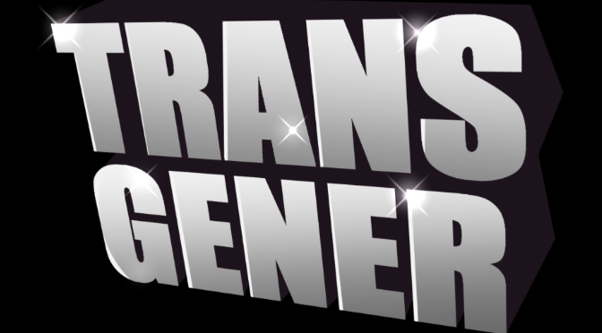
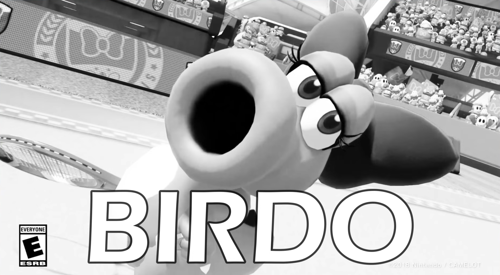
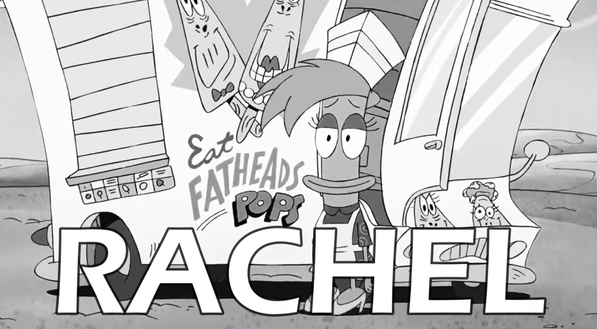

Auron's Template
Posted on Oct 21, 2026, by Auron Ragusa
Hello, I am Auron Ragusa on the day of September 25th 1994, I am currently 10 years old, and alive at this time as my birthday is clearly not in 2012. Today I am watching the season 2 premier of Rocko’s Modern Life on Nickelodeon. Wow I love Ralph (seen on the left) so much and would be very upset if he were to change in order to make the plot of a return movie in a few years. Fast forward a few years. “I’m not Ralph anymore, I'm Rachel." (From Rocko’s Modern Life movie: Static Cling) Oh what the heck.
*HUGE ASTERISK: This blog post is my personal experience mixed in with exaggeration for entertainment purposes and admittedly it's a lot of me ranting about stuff that makes me a lil mad, SO TAKE THIS WITH A GRAIN OF SALT.
In more recent media, diversity isn't quite as uncommon as it once was. It has started to become more natural than it once was instead of being forced or actively stigmatized. Letting more than cis men and women write a script, voice a character, direct a movie, make a game, etcetera has come to be a — slightly more natural — standard at least compared to the past where you would get curb-stomped for it. A person being African, Asian, or gay isn't really anything out of the ordinary nowadays. Of course there will still always be people against it, but these people really only have 2 arguments. One is that it’s retconning an existing character (which isn't a good argument as the creator / rights holder has control over the character, and can do whatever the hell they want), and the other is just blatant bigotry. Most characters get by without a hitch, however, there tends to be one character that tends to stir up more targeting communities. That being:

Sure, one could go unnoticed if not explicitly said in the media they’re in, but as soon as it's a point of conversation, targeting crowds will be at the creators doorstep, claiming they support “child grooming” and “pedophilia”. There have probably been a few characters you have seen that have changed their gender, much to the dismay of the people who call it woke propaganda. What is essentially a change in artistic view for a character or a plot point for a character arc to most writers or viewers, there will be those who so proudly claim it to be child grooming. The same character that they probably would not care about otherwise. And, sure, you can see it like that if you want, but that doesn't change the character.
Sorry for the long-winded intro, the blog post is even longer, strap in bud. But that's about all the bashing I will be doing unless relevant. I would like to write this to be about trans people specifically trans women as that seems to be the main point of contention along with being what I am, and being what is easier to find. And now, onto women.
First transgender icon in video games (that I found).

The earliest relevant transgender character gaming is Birdo. At least from what I could find. There is a solid chance you've heard this one but yes she does still count. First appearing in the American version of Mario Brothers 2 in the manual it states quote: “He thinks he is a girl” and would quote: “Rather be called berdetta.” Birdo’s gender would continue to flip-flop from region to region and game to game, most saying “indeterminate” or referring to her with female pronouns. I actually found a
Transexual.org
webpage about her, and besides how hard it is to read, it's very heartwarming to read how trans people felt about the first trans icon in games.
Keeping on the topic of Mario, the gender of toads is something interesting to be noted on. Does every toad start out as male, making toadette Trans? Or are they 2 completely unrelated species? Well, we have no answer… (that I could find). Want more Mario? Here's more Mario. I swear, I have more besides Nintendo I’M GETTING THERE so uh rapidfire trans women. Vivian, from paper mario is a trans woman. And unlike birdo this is confirmed as it’s basically her whole storyline. That one girl in Pokemon X and Y, Beauty Nova, well she's trans (from what I’ve heard). Anyways back to the bigger topics.
The best transgender example, in my opinion

I would like to say the best example of this topic is Rachel Bighead from Rocko's modern life. The show follows Rocko and his friends around, get this: a modern life. While the show is a bit outdated given our 30 year distance from a 1992 modern life, it’s still in my opinion a good watch. What's that? You prefer Hey Arnold? Or… Douge? Well you're weird and I’m not talking about you, go away. Anyway times have changed and it's been 34 years since the show ended, or more depending on when you read this. Our lives now are nothing like Rocko’s clearly 1:1 realistic representation of modern life in the early to mid 1990’s. However in the late 2010’s we got Nickelodeon movies that follow the events of their shows and tie up loose ends. Hey Arnold in 2017 (okay I guess we did talk about you), Invader zim in 2019, and of course, the current topic: Rocko’s Modern Life: static cling.
For those who aren’t caught up, Rocco’s neighbour is Mr.Bighead, a very angry frog who has been stuck at a dead-end job for over 30 years. His wife Mrs.Bighead has something to do with Rocko. Finally their child, Ralph who got disowned by his parents for not wanting to work at the same dead end job as his dad and instead going to Hollowood. Where he became a cartoonist making a show called the fatheads based loosely on his parents. Caught up? No? Too bad.
In the movie Static Cling Rocko and company return to their home but everything's different, it’s still modern life but it’s not like what they are used to since they were floating around the universe for 20 years. They go through the standard technological and societal differences that the main cast isn't caught up to yet, they then find out Rocko’s favorite show, the Fatheads, has been taken off the air a long time ago. They go on a hunt to find Ralph, the creator of the show only to find out the “he” is a “she”. Rachel Bighead the trans icon for frogs turned gay by chemicals in their water!
Something I don't see talked about a lot, which I thought would have been more of a point of contention is the voice actor for both Ralph and Rachel is Joe Murray, a cis male. While it’s probably just for consistency, I like to think it's supposed to be because a lot of trans women, like me, either don't have the time or don't care enough to voice train. It helps us who are trans with transphobic communities feel seen I think. At the end of the movie Rachel’s parents change their transphobic ways and realise she is still their child and that family is more important than some unfounded prejudice. Also, I think using Rachel being trans as a MacGuffin as being trans has become a more normal thing in modern life.
Oh boy the controversy
Behold, the female presenting male that uses a teddy bear named rodger, a Yo-yo and their butt to fight. Bridget from guilty gear. This has stereotypical trans written all over it, if not some kind of queer. She first appeared in Guilty Gear XX, the 3rd game in the franchise in 2002 backstory states that she was born into a rich family, but had a twin brother. She lived out her life presenting as a female. About 20 years later we get guilty gear strive. “She tries to live out her life as a male but it just doesn't feel right.” Oh- what's this? The pedophiles calling this grooming alarm is going off, better take a peek-
Oh no. This whole discord happened a while ago, with people saying it was grooming, it was a mistranslation, a fluke, “femboy erasure” or “the woke mob at it again”. “Trans people don't exist in Japan” so many have proudly proclaimed. It reminds me how a lot of people see being Japanese as a religion rather than a nationality. These people got so ANGRY about it that there was a fake email stating that Bridget is not trans. Now, to give them credit whoever wrote it knew not to write a transphobic hitpiece as that would give them away. The only important line here is “We call them this because they are boys with feminine qualities.” suggesting the character isn't trans and guess what happened? The publisher of the guilty gear franchise pointed out it was fake. I find it so funny that so many could not have coped harder about a trans woman with a Yo-yo. I’m getting a tad bit off track.
The cherry on top of this story is that the creator of the game, Daisuke Ishiwatari, stated that Bridget was always a trans woman and that her whole arc is finding who she is as a person, what she feels she is. Using being trans for a story about self identification and expression is great but so many got so freaked out that the character they never even cared about was, in fact, trans. And what's come from it? Well we now have a silly little character that I am more than happy to know exists.
As I said, transgenderness is becoming a more normal thing in our society and it's inevitable you will meet a trangender person, closeted or not. And maybe you will just never know it. I think that knowing most transgender representation is gags to belittle and make fun of the community is unfair to an already mistreated minority. It's not as bad as it was when being anything but cis and straight was quite risky in any media. The moral of the story is DON'T BE MEAN! Okay bye :D
Comment (write comments here)